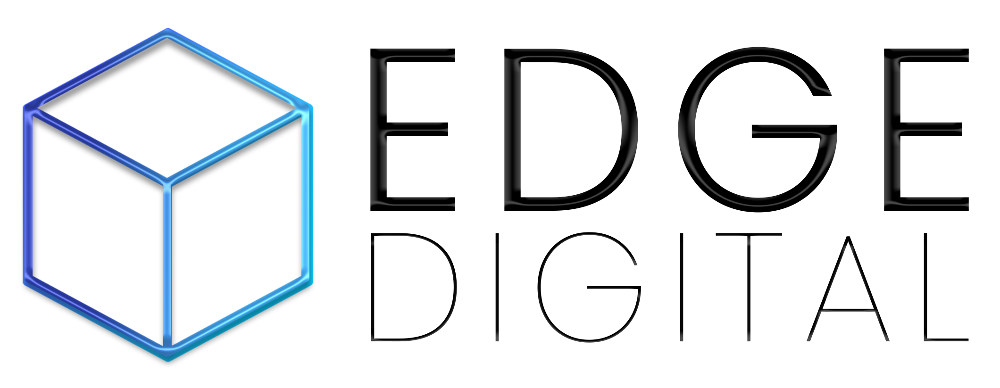

Alles vom Vormittag zum Nachlesen. Sie brauchen kein Konto, müssen nichts eintragen und nichts installieren.
Fast alle tippen wie bei Google: drei Wörter, dann hofft man auf einen Treffer. Es funktioniert aber wie das Gespräch mit einer neuen Aushilfe. Klug und schnell, und sie weiß nichts über Ihren Betrieb. Also erzählen Sie ihr, was sie wissen muss.
„Du bist meine Büroleiterin." „Du bist eine erfahrene Verkäuferin."
Ein Angebot. Ein Beitrag. Eine Antwort auf diese Mail.
Wer ist die Kundin, was ist vorher passiert, was kostet es, was darf nicht vorkommen. Diese Frage macht den Unterschied, und sie ist die, die fast immer fehlt.
Wie lang, wie förmlich, mit Anrede, in Stichpunkten, freundlich oder deutlich.
Die erste Antwort ist ein Entwurf, kein Ergebnis. Genau hier hören die meisten auf und schreiben es am Ende doch selbst. Dabei ist das Nachbessern die eigentliche Technik.
Sie müssen nicht wissen, wie man richtig fragt. Sie müssen nur sagen, was Ihnen an der Antwort nicht passt.
Das ersetzt keine Buchhaltung. Aber Sie gehen mit einer sortierten Liste zur Steuerberaterin statt mit einem Schuhkarton.
Beschreiben Sie die Lage, nicht die Person. Statt „Frau Petersen aus der Bergstraße 12" schreiben Sie „eine Stammkundin". Den Namen setzen Sie beim Einfügen ein, das dauert vier Sekunden, und der Text wird derselbe.
Gesundheitsangaben, Personalakten und Bewerbungsunterlagen gehören nie in eine kostenlose Fassung. Wer regelmäßig mit Kundendaten arbeitet, nimmt die bezahlte Version, da gehört ein Vertrag dazu, der genau das regelt.
Erledigt. Sie fangen nicht bei null an.
Die von Ihrer Liste, die Sie am meisten nervt. Nicht die wichtigste, die lästigste.
Diesmal meckern Sie. Beim dritten Mal sitzt es, und ab da dauert es zwei Minuten.
In eine Notiz auf dem Handy. Nach vier Wochen haben Sie fünf Sätze, die Ihren Betrieb kennen. Ein Werkzeug, das sonst niemand hat.
Nicht zehn Werkzeuge. Eines. Nicht zwanzig Aufgaben. Eine.
Umschreiben löst fast alles. Sechs Dinge bleiben trotzdem draußen, egal wie gut man sie umschreibt.
Namen und Adressen · Personalakten und Bewerbungen · Krankmeldungen
Verträge und Konditionen · Kontodaten · Kundenlisten aus dem System
Das gilt unabhängig davon, ob Sie eine kostenlose oder eine bezahlte Fassung nutzen. Die großen Anbieter sind amerikanische Unternehmen, und der US-Cloud-Act erlaubt amerikanischen Behörden den Zugriff auf deren Daten, auch wenn die Server in Europa stehen. Ein Bezahltarif ändert daran nichts. Der Weg drumherum ist derselbe wie oben: „Eine Stammkundin" statt des Namens.
Vortrag beim Unternehmerinnen-Netzwerk visionista der Wirtschaftsförderung Herzogtum Lauenburg, am 19. August 2026 bei der AWSH in Elmenhorst. Die Fotos stammen von Franzi Schädel Fotografie und aus dem Bildarchiv der WFL, die Zeichnungen sind mit KI entstanden.
Die Folien ansehen
Edgar Paul-Ghazaryan und Emre Erdogan
EDGE Digital, Fischstraße 16, 23552 Lübeck
info@edge-digital.ai